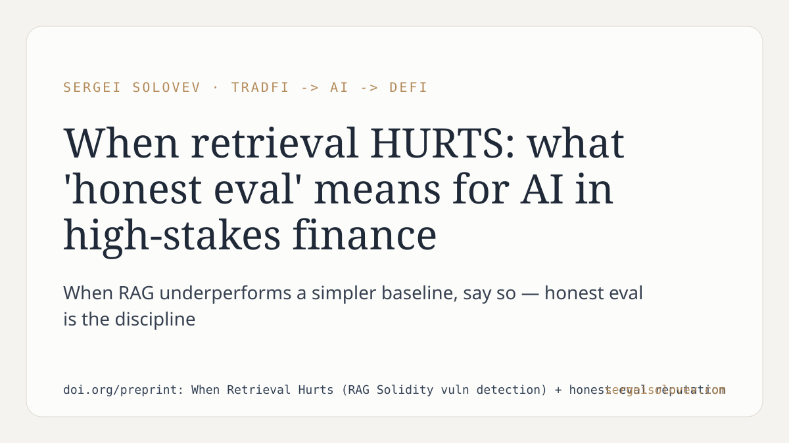

A question that rarely gets asked in applied ML: when does adding retrieval make detection worse than a simpler baseline?
That is the central finding in our recent work on automated Solidity vulnerability detection. We built and evaluated a retrieval-augmented pipeline, then ran it against a straightforward non-retrieval approach on the same task. In at least one evaluation tier, the RAG configuration did not outperform the simpler rule. Rather than bury that result, we report it directly and retract the underperforming configuration from our conclusions.
This matters for anyone deploying AI in high-stakes domains — smart contract auditing, credit risk, fraud detection. The failure mode is not a system that crashes; it is a system that passes internal benchmarks while underperforming in production against a method you already had. The honest-eval discipline is publishing the condition under which your more complex system loses, not just the conditions under which it wins.
Retrieval adds latency, infrastructure cost, and retrieval noise. If none of those costs buy you lift over a simpler baseline on the distribution that matters, the right call is to say so. That is what we did here.
Full paper: https://doi.org/preprint: When Retrieval Hurts (RAG Solidity vuln detection) + honest-eval reputation
#RAG #SmartContracts #AIagents